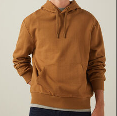
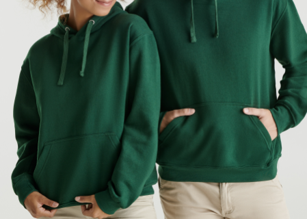
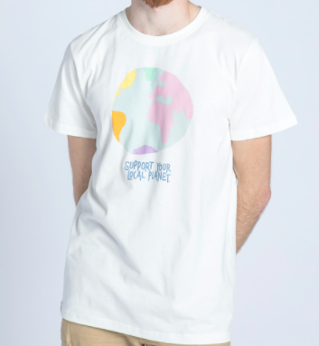
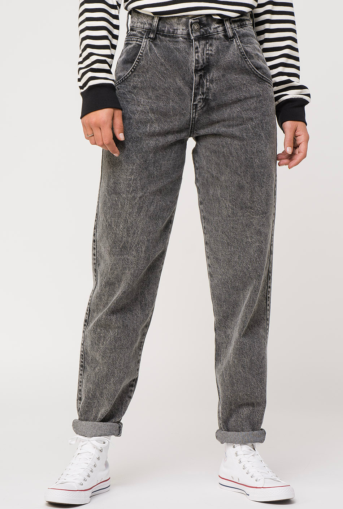

Sudaderas
La sudadera, polera, polerón o buzo es una prenda gruesa de algodón que se utiliza para hacer deporte. El uso extendido de esta prenda fuera de las actividades deportivas ha provocado que numerosas firmas lanzaran diferentes líneas de sudaderas.


Camisetas
Una camiseta, es una prenda de ropa interior de abrigo por lo general de mangas cortas, cuello redondo o en forma de "V". Existen diversos diseños, que varían algunas de sus características básicas, por ejemplo, modificando el cuello redondo (también llamado "en caja") por otro en "V" (o de pico) o añadiendo bolsillos. Además de manga corta, las hay de manga larga e incluso sin mangas, y también de tirantes (esta última llamada también esqueleto, camisilla o franelilla). Su longitud varía desde la mitad del muslo hasta por encima del ombligo, aunque lo normal es que acabe donde empieza el pantalón o falda, es decir, sobre las caderas.

Pantalones
Esta confección de tela de distintos materiales (algodón, mezclilla, poliéster, pana, etc.) tiene tres aberturas; una de ellas se ajusta a la cintura y las otras dos en cada una de las piernas. El pantalón puede ser largo, en cuyo caso las bocas de las piernas llegan a la altura de los tobillos o incluso más abajo, o puede ser corto en distintas graduaciones, que van desde la pantorrilla (piratas) hasta la rodilla (pantaloneta) o la ingle (mini-cortos). Cuando la largura llega a media pantorrilla, se denominan pantalones Capri. Esta vestimenta es usada tanto por varones como por mujeres, y suele tener también accesorios tales como bolsillos para guardar elementos personales, cremallera (bragueta en el caso de los varones), para poder vestir más fácilmente aquellos de materiales menos flexibles, y pasacintos, para poder sostener aquellos que sean holgados de cintura.
